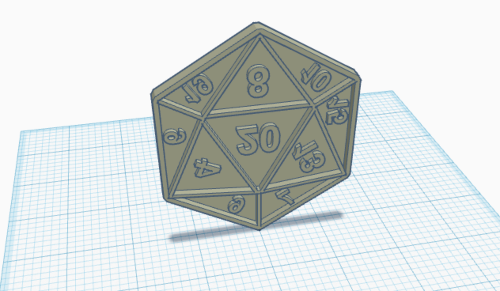
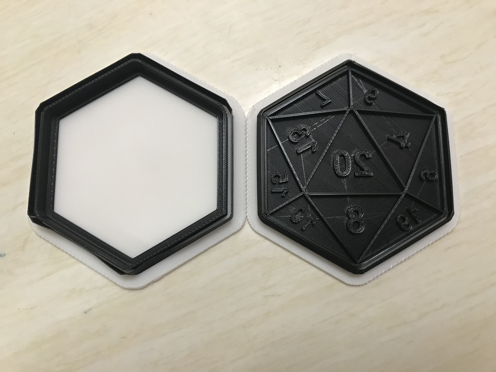

Design
I decided that I wanted to 3D print a cookie cutter in the shape of a 20-sided die. I did a little research to see if PLA was safe for a cookie cutter and the general consensus was that PLA was safe to use for food. I found a design on Thingiverse and uploaded it to Tinkercad. After working on the dimensions a little bit I sent my file to be printed.

Printing
Printing wasn't too difficult, though I did run into a problem on Tuesday and Wednesday when the printing lab sent me an email that there was a problem with my design because it had non-manifold edges. They didn't think it would be too big of a problem and because I couldn't really alter the design to solve any of these edges, I went ahead with printing anyway. I picked it up on Thursday and it really was free of issues, which made me happy.

Cookies
I tested out my cookie cutter and the cookies turned out really well. I used a recipe for sugar cookies and added cornstarch to make the edges crisp and neat so that they wouldn't spread and I wouldn't lose my design, and I added some multicolor nonpareils (also called hundreds and thousands) to make fun colors.